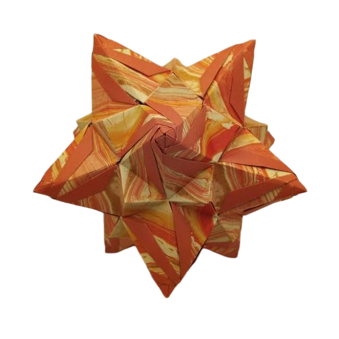

Edilson Hernandes Lopes
Meu nome é Edilson Hernandes Lopes, tenho 51 anos e sou de Apucarana - Paraná, mas resido em Curitiba a mais de 40 anos.
Sou formado em Tecnico em Mecânica Industrial e Barberio Profissional, e atualmente estou desempregado.
No meu tempo livre, gosto de ir ao cinema e sou apaixonado origamis Kusudama.
Sou uma pessoa tranquila, e estou sempre em busca de novos desafios, como agora depois dos 50 anos buscando uma colocação no mercado de trabalho na áreia de TI.

kusudama